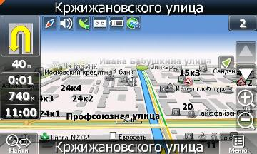
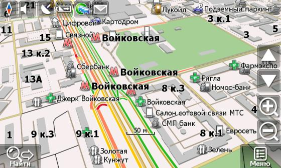
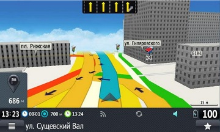
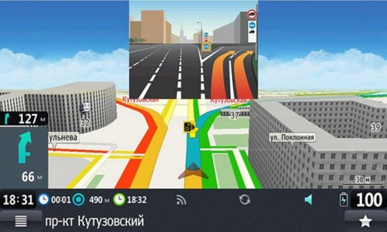
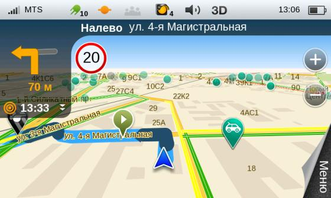
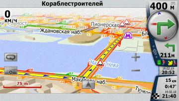
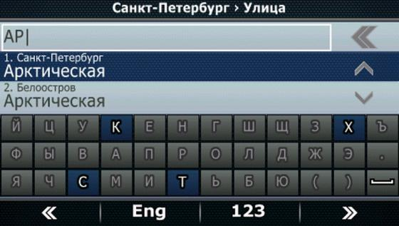
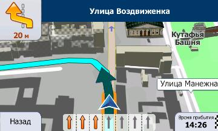

Обзор некоторых современных навигационных программ

При покупке навигатора в автомобиль наибольшее внимание следует уделять именно софту. Ведь даже самый надежный, быстрый и красивый гаджет с неточными картами или зависающей маршрутизацией будет бесполезной коробочкой, незаслуженно занимающей место в салоне машины.
Именно из этих соображений мы подготовили сводный обзор самых актуальных навигационных программ, доступных автомобильным навигаторам.
Для теста мы выбрали автомобильный навигатор с 5-дюймовой диагональю Lexand STR-5350 HD +. Как и большинство GPS-навигаторов на российском рынке, новый Lexand продавался с программой «Навител Навигатор» на борту, поэтому логичнее всего начать наш сводный обзор именно с этого приложения.
«Навител Навигатор» - навигационная программа, обзор

< РЕЗУЛЬТАТЫ ТЕСТА ОСОБЕННОСТИ РАБОТЫ ИнтерфейсИнтерфейс программы Navitel Navigator простым не назовешь – чтобы разобраться в настройках и инструментах, понадобится какое-то время. В режиме навигации в верхней левой части экрана отображаются иконки настроек: вид карты, звук, GPS, сообщения. Там же и индикаторы – состояние батареи и наличие Интернет-соединения. Кнопки регулировки наклона карты, поиска объекта, а также изменения масштаба, вызова меню и сообщения о событиях на дороге расположены в нижней части экрана слева и справа соответственно. Карта во время движения автоматически масштабируется в зависимости от характера местности и скорости движения, причем отображается это рывками.
Особенность «Навител Навигатор» в целом и пятой версии в частности – трехмерное отображение автомобильных развязок и других объектов. Впрочем, реализовано оно довольно слабо – постройки прорисованы без учета этажности, и выглядят как игрушечные домики (сориентироваться по такой схеме местности сложно).
Расчет маршрутаРазработчики уверяют, что «Навител Навигатор 5.0» использует улучшенный алгоритм поиска маршрута. Операция эта выполняется действительно быстро и занимает несколько секунд. В сравнении с ранними версиями, например, с версией 3.5, прирост в быстродействии налицо. Однако за время тестирования при расчете маршрута наш Lexand STR-5350 HD + два раза серьезно и основательно задумывался, не менее чем на 30-40 секунд при прокладке маршрута по Москве.
При отклонении от выбранного маршрута навигационной программой генерируется альтернативный, этот процесс также занимает какое-то время (не более 15 секунд). Величину отклонения, при которой будет выполняться пересчет, можно настроить.
Маршрут можно прокладывать по адресу, точкам интереса (СТО, заправки, гостиницы, больницы и т.п.), координатам, по местам, внесенным в список фаворитов или произвольным точкам на карте.
Сервис пробокАвтомобильный навигатор Lexand STR-5350 HD +, на котором проводилось тестирование, оснащен Bluetooth модулем. Он позволяет выполнять синхронизацию с мобильным телефоном и в полной мере использовать сервис «Навител. Пробки», загружая из Сети данные о заторах на дорогах.
Каждый пользователь сервиса является одновременно и источником информации. Через определенные промежутки времени, используя доступ в Интернет, программа отправляет данные о местоположении пользователя и скорости его движения. В результате обработки информации от многочисленных источников делается вывод об уровне трафика в определенной части города.
Начиная с пятой версии, «Навител. Пробки» позволяет получать актуальную информацию о временно перекрытых или ремонтирующихся дорогах. Приятно, что исправлена ошибка отображения информации о пробках в разных масштабах карты, которая была присуща предыдущим версиям.
При включении соответствующей опции навигационной программы, просчет маршрута осуществляется с учетом дорожного движения. Но полностью полагаться на навигационное ПО все же не стоит – не всегда предложенный в объезд маршрут будет действительно удобнее. Пробка, которая отображается на карте, в реальности может уже рассосаться (пару раз сталкивались с тем, что ярко-красные, загруженные перекрестки на карте оказывались совершенно свободными в реальности). Но более неприятно, когда подъездные улицы навигация считает «зелеными» и пытается проложить по ним маршрут, в то время как на самом деле машины по ним движутся еще медленнее чем по основной магистрали.
Во время тестирования проблем с «Навител. Пробки» не возникало. Но проигнорировать многочисленные жалобы пользователей на некорректное отображение пробок и заковыристые маршруты, которые предлагает «Навител Навигатор», мы не можем.
КартыКомпания «Навител» заслужено славится своей картографией. При этом карты не приобретаются, а создаются непосредственно специалистами на основе спутниковых снимков с привязкой по координатам и собственных данных, полученных во время выездов спецмашин. Но не рекомендуем вам всецело полагаться на маршруты предложенные программой особенно за городом. Часто случается, что программ пытается завести автомобиль, на грунтовку считая это самым коротким маршрутом в итоге проехав пару километров можно запросто упереться в болото или дорогу с покрытием «как после бомбежки».
«Навител Навигатор», начиная с пятой версии, использует карты формата nm3.
Карты, или как их еще называют, атласы, в тестируемом «Навител Навигатор 5.0» (в нашем распоряжении был пакет карт «Россия») действительно детальные, до мелочей проработанные, с множеством POI. На них можно найти любой дом по номеру на самой маленькой улочке. Адрес набирается с экранной клавиатуры. Но это в Москве, а стоит выехать чуть-чуть за ее границы, так Navitel Navigator не смог найти деревню Елино располагающуюся между Черной грязью и Зеленоградом по Ленинградке.
В точки интереса занесены автосервисы и заправочные станции, заведения питания и банкоматы разных банков, лежачие полицейские, аптеки, музеи – объекты городской инфраструктуры на все случаи жизни. Для POI предусмотрен фильтр по категориям, например «Автомобиль», «Торговля», «Услуги», «Гос. службы».
Так как на навигаторе Lexand STR-5350 HD + карты для «Навигатора» были предустановленны, то проблем с ними не возникало. Однако многие пользователи при обновлении карт сталкиваются с необходимостью производить дополнительные манипуляции, чтобы добиться корректной работы.
РЕЗЮМЕ ДОСТОИНСТВА: ·Детальные собственные карты, большое количество POI; ·3D-отображение развязок; ·Наличие сервиса пробок; ·Регулярное обновление карт. НЕДОСТАТКИ: ·Не всегда актуальна информация о пробках; ·Маршрут с учетом пробок не всегда оптимальный; ·Периодические «подвисания» при расчете и перерасчете маршрутов; ·Движение и масштабирование карты отображается рывками. ОБЩАЯ ОЦЕНКА:Производителине зря выбирают «Навител Навигатор 5.0» в качестве предустанавливаемой программы, так как у этого приложения подробные карты крупных городов и полный набор востребованных функций. Нужно только потратить немного времени на то, чтобы разобраться в интерфейсе и настройках. Сбоев при работе на платформе Win CE 6.0 замечено не было, разве что незначительные подвисания.

«Прогород» - навигационная программа, обзор

РЕЗУЛЬТАТЫ ТЕСТА
Ранее навигационная программа «Прогород» была доступна для Android, Windows Mobile, Windows CE и Bada, а с момента выхода «Прогород» 2.0 стала доступна и для iOS-гаджетов – iPhone, iPad и iPod Touch.
Однако для близкого знакомства с программой мы выбрали не «яблочные гаджеты», а всё тот же классический портативный автомобильный навигатор Lexand STR-5350 HD +. Работает он под управлением Windows CE 6.0, что позволяет инсталлировать на этот PND одновременно несколько навигационных приложений. Выбираем «Прогород» с помощью кнопки «Путь навигации» и начинаем тест.
ОСОБЕННОСТИ РАБОТЫ ИнтерфейсРазработчики навигационной программы решили не идти по ошибочному пути усложнения навигации по меню и перенасыщения режима карты кнопками. Интерфейс несколько напоминает iGO, чтобы начать работать с программой, не нужны никакие дополнительные сведения – все прозрачно и понятно.
Основное меню делится на четыре вкладки: «Поиск», «Маршрут», «Настройки» и «Личные». В отдельном меню сохраняются наиболее часто используемые функции для их быстрого вызова. Карту и 3D объекты можно поворачивать и масштабировать, используя мультитач.
Навигационная программа «Прогород», как и «Навител Навигатор», поддерживает режим трехмерного отображения автомобильных развязок и зданий.
В лучшую сторону навигацию «Прогород» отличает наличие сервиса Junction View. Это система при приближении к перекресткам и сложным развязкам выводит на экран фотореалистичную картинку-подсказку с указанием нужного направления движения. Сориентироваться по похожей на фотографию картинке значительно легче, чем по схематическому, пусть и трехмерному изображению перекрестка.
КартыРазработчик навигационной программы «Прогород» компания «Сидиком Навигация» - одна из немногих, кто занимается созданием собственных карт России.
Карты других стран (Австрии, Беларуси, Испании, Италии, Казахстана, Кипра, Латвии, Литвы, Молдовы, Украины, Финляндии и Эстонии) предоставляются участниками Open Street Map. На этих картах не работают никакие онлайн-сервисы и нет подсказок Junction View.
Система динамических обновлений, сервис пробок и работа с маршрутомВ последней версии «Прогород» реализована система динамических обновлений, которая передает актуальные данные о состоянии дорог, временных дорожных знаках, перекрытых улицах и других изменяющихся факторах, способных помешать добраться до пункта назначения за оптимальное время. Для того чтобы воспользоваться этими возможностями навигатор должен меть возможность выхода в интернет, либо с самостоятельно соединяясь с Сетью по GPRS модему, либо, пользуясь Bluetooth, через мобильный телефон пользователя. Как раз последий способ используется в автомобильном навигаторе Lexand STR-5350 HD +.
Система динамических обновлений работает в тесной связке с сервисом пробок, который отличается своей экономичностью. Для загрузки актуальной информации о состоянии дорожного движения по маршруту следования программе необходимы всего десятки килобайт. За час тратится порядка 50 копеек – против 8 рублей у «СитиГИД» и 13 рублей у «Навител» за аналогичное время.
Секрет заключается в том, что при использовании сервиса пробок данные о начальной и конечной точках маршрута передаются на сервер, обрабатываются с учетом наиболее свежих данных, а затем пересылаются обратно. Таким образом, клиент получает только интересующую его информацию, а не данные о пробках на дорогах по всему городу.
Однако, учитывая то, что львиную долю информации аналитический центр получает от пользователей программы, которых сравнительно немного, работа сервиса пробок, к сожалению, не на высоте. Впрочем, ситуация, когда приложение предупреждает о пробке, которая фактически уже «рассосалась», нормальна для пробочных сервисов в любом приложении.
Естественно, что навигационная программа «Прогород» может и сам рассчитать маршрут в режиме «оффлайн», основываясь на данных карт и последних загруженных динамических обновлений. При этом, он представляет пользователю на выбор несколько маршрутов: простой (минимум поворотов), короткий, удобный (по широким улицам).
РЕЗЮМЕ ДОСТОИНСТВА: ·Система динамических обновлений и экономный сервис предупреждения о пробках; ·Детальные собственные карты, большое количество POI; ·3D-отображение развязок; ·Удачная реализация Junction View. НЕДОСТАТКИ: ·Не всегда точный сервис предупреждения о пробках. ·Онлайн-сервисы работают только на собственных картах ОБЩАЯ ОЦЕНКА:Навигационная программа «Прогород» демонстрирует удачные решения (Junction View, просчет нескольких маршрутов, динамические обновления), а онлайн-сервисы радуют экономным расходом трафика. Из заметных недостатков – не всегда точные «пробки».

Компания "Контент Мастер" – совсем не новичок на рынке навигации. Она была образована в 2008 году и с тех пора сумела обзавестись не только собственной линейкой навигаторов, но и разработала собственную навигационную программу. Эти продукты известны под брендом SHTURMANN. Отечественная навигация априори вызывает к себе чуть большее доверие в сравнении с зарубежными аналогами, так как учитывает именно местные особенности дорог. Впрочем, поставщик картографии для этой навигации – иностранная компания NAVTEQ.
ОСОБЕННОСТИ РАБОТЫ
Меню
Первое что мы видим при загрузке навигационной программы SHTURMANN - меню. Оно явно ориентировано на использование без стилуса, поэтому мы имеем дело с крупными кнопками. Собственно, таковых выводится всего три штуки: "Поиск", "Настройка" и "Маршрут". Вверху расположена информационная панель, где видны основные индикаторы индикаторы. Нашлось место для отображения названия оператора, уровня сигнала сети, числа "пойманных" спутников, состояния подключения к серверу SHTURMANN и других не менее важных моментов.
Статично рассматривать панель не придется, ряд пунктов при нажатии приводит нас к дополнительному меню. В нижних краях экрана установлена кнопка выхода из программы и "бумажный загиб" для перехода непосредственно к карте.
Поиск адреса
Как театр начинается с вешалки, так и навигационная программа требует для начала продолжить требуемый маршрут. Соответственно обращаемся к пункту "Поиск", где навигационная программа SHTURMANN предлагает нам установить конечный адрес по координатам, ввести его вручную или же показать путь к другу. Вдобавок в меню есть пункты просмотра избранных точек и истории запросов.
Меню ввода адреса радует визуально понятным и функциональным интерфейсом. Буквально по строкам мы уточняем, в какой стране и городе расположен пункт, а также отмечаем дом и улицу. Для упрощения работы присутствует функция текущего местоположения, когда останется лишь указать требуемую улицу и номер дома. Нашлось место для своеобразной интеграции с историей запросов – в выпадающем списке при вводе отображаются последние введенные адреса.
Введя адрес, мы можем нажать кнопку "Показать на карте" и просмотреть пункт нашего назначения или выбрать "Маршрут", который помимо точки отобразит расстояние до нее и примерное время поездки. Кнопка "Поехали!" в нижней панели SHTURMANN говорит сама за себя, по ее нажатию незамедлительно производится прокладка маршрута.
Чуть подробнее остановимся на POI или так называемых точках интереса. SHTURMANN содержит хороший выбор разных категорий заведений вроде мест питания или заправок. С последними связан примечательный момент: программа позволяет делать фильтрацию по компании-собственнику АЗС, типу имеющегося топлива и способам оплаты. Также программа может «подкачивать» данные с сервера и расширять и обновлять базу точекPOI.
Маршруты
Как только маршрут проложен, программа SHTURMANN делает доступным экран с проложенным путем, указанием оставшегося расстояния и расчетным временем прибытия. Заранее доступен просмотр всех маневров на пути, причем в двух вариантах: описанием с картой и текстовым списком. Во время прохождения маршрута можно обратиться к меню статистики, где покажут наше время в пути, длительность остановок, а также расскажут о средней, текущей, максимальной и "с остановками" скорости.
Перемещение по карте осуществляется плавно, без рывков. Для изменения масштаба поддерживается функция мультитач, то есть использование нескольких пальцев. Отображение карт производится как в дневном, так и ночном режиме. Кстати, когда вы находитесь в движении, всегда доступна кнопка "Отобразить весь маршрут" для быстрого просмотра всего предложенного пути.
На карте навигационной программы SHTURMANN показываются все необходимые информационные уточнения вроде номеров домов и названий улиц. По умолчанию включены все точки интересов. Если их скопление в отдельном здании велико, то они устанавливаются "ромашкой". Весьма удобное и креативное решение. Хотя в любом случае рекомендуем вручную настроить показ нужных POI, в противном случае они попросту "забивают" экран.
Если произвольно нажать на любую точку карты, то появится панель с функциями добавления в избранное и в "объекты". Повторное нажатие приведет к опциям получения информации о точке или немедленной прокладке маршрута к ней.
Когда начинается движение, вся основная информация сосредотачивается слева на полупрозрачной панели. Она содержит сведения о предстоящем маневре, спидометр, а также оставшиеся время и расстояние до объекта. При необходимости нижнюю часть индикатора можно убрать или наоборот расширить на область карты добавив электронный спидометр.
Сама панель является интерактивной, по нажатию на область маневра мы попадаем в меню "Описание с картой", а касание спидометра приведет в меню выбора часов или последующего маневра. По ходу движения поддерживается автоматическое масштабирование, когда расстояние "до земли" устанавливается в зависимости от скорости движения и расстояния до ближайшего маневра.
За отображение пробок отвечает сервис "Яндекс.Пробки", до сих пор причин усомниться его качестве у нас не возникало.
РЕЗЮМЕ
ДОСТОИНСТВА
Понятный и функциональный интерфейс; Поддержка сервиса Яндекс.Пробки;НЕДОСТАТКИ
Отсутствие подсказок Junction ViewОБЩАЯ ОЦЕНКА
SHTURMANN получился достойным и конкурентоспособным навигационным приложением. Его самой сильной стороной является совмещение стандартного функционала подобных программ с нетривиальным и удобным интерфейсом. Серьезные недостатки на данный момент отсутствуют, разве что отсутствие подсказок Junction View.

«СитиГИД» - навигационная программа, обзор

РЕЗУЛЬТАТЫ ТЕСТА
Навигационная программа «СитиГИД» 7.0 – последняя на данный момент версия приложения. Ее можно считать по-своему знаковой, так как разработчики полностью переработали элементы программы и сделали ее более понятной и удобной для использования в дороге. Не обошлось и без целого ряда новшеств, которые другим навигационным разработкам наверняка незамедлительно захочется перенять. Тестирование было решено проводить на базе автомобильного навигатора Lexand STR-5350 HD + с операционной системой Windows CE 6.0 и Bluetooth модулем.
ОСОБЕННОСТИ РАБОТЫ
Меню и экранная клавиатура
Здесь сразу видны первые признаки изменения в лучшую сторону. Пункты в City Guide подверглись компактной группировке. При нажатии кнопки «Меню» на экране с картой подпункты теперь показываются группой по четыре штуки в правой части экрана поверх карты. То есть, при любых действиях водитель все равно продолжает видеть карту и не отрывается от маршрута.
На пальцевое управление программа «СитиГИД» 7.0 не ориентирован: пользоваться экранной клавиатурой, которую разработчики привели в «традиционный» вид, без стилуса неудобно. Но так как мы тестировали программу на 5-дюймовом навигаторе, особых проблем не возникло (с 4,3-дюймовой моделью или смартфоном было бы труднее).
Поиск маршрута
Разобравшись в меню City Guide, начинаем прокладку маршрута. В левой части экрана продолжает отображаться карта, причем по ходу ввода адреса делается зум района вплоть до детального показа улицы.
Кнопки «Старт» и «Финиш», означавшие в прошлой версии «СитиГИД» в версии 7.0 начала маршрута и его конец отсутствуют. На экране осталась только лаконичная кнопка «Поехали» и «Или…», препровождающая нас к дополнительным опциям вроде истории последних десяти запросов. Отметим появившиеся внизу две продолговатые клавиши «назад» и «на карту».
Карта
Детализация в седьмой версии City Guide по-хорошему удивляет. Отражены некоторые особенности архитектуры и этажность. Соответственно соблюдены масштабы и пропорции между зданиями, поэтому карта начала выглядеть в каком-то смысле даже реалистично. К зданиям прибавилась текстура окон. Причем в ночное время на карте также чуть темнеет, а в окнах зажигается свет.
Панель индикаторов выглядит необычно. Разработчики не стали брать пример с других навигационных программ и довольствоваться очередной вариацией на тему стрелочек в прямоугольнике из iGo. Вместо этого проводник по маршруту расположился в левом нижнем углу в полукруге и напоминает дополнительный элемент приборной панели автомобиля. Первое время кажется, что читаемость параметров чуть упала, но позже привыкаешь и уже не представляешь иного способа подачи информации.
Так как в наших руках находился автомобильный навигатор Lexand STR-5350 HD +, на базе WinCE 6.0, по достоинству был оценен плавный скроллинг (прокрутка). В отличие от новых мобильных систем вроде iOS на iPhone, разработка Microsoft изначально не поддерживает такой скролл, поэтому возможность была реализована в самой программе навигации «СитиГИД».
Теперь пройдемся по общим впечатлениям от использования карт. Разработчики навигации избежали кучности элементов и визуальной разобщенности. Грамотно подобраны шрифты, цвета, приятно выглядят значки. Управление видами (наклон карты, масштабирование) осуществляется кнопками с идеальным уровнем прозрачности, они по сути не закрывают карту и обращают на себя внимание только при необходимости непосредственного использования.
В быстром меню City Guide пользователь может собственноручно подобрать набор из шести самых полезных команд. Формируется список из 27 доступных функций и режимов. Жаль, что перенастройка кнопок оказалась делом непростым, в инструкции о ней ничего не сказано.
Про многочисленные ошибки карт «СитиГИД» мы говорили ранее. Компания делала ставку на пользовательскую активность в поиске и исправлении ошибок свободно распространяемых карт, которая по видимому не оправдалась. Сейчас разработчик перешел к стандартной, схеме закупок карт у разработчиков. В итоге если пользователь хочет перейти от бесплатной карты изобилующей ошибками к более точному продукту ему необходимо ее купить. Причем нарезка карт дет по областям России каждая из которой стоит от 300 до 600 рублей. Карты же стран СНГ и того дороже, тут стоимость отдельной области доходит до 1500 рублей.
Пробки
Система «Пробки 2.0» - один из главных козырей программы «СитиГИД». В отличие от аналогичных сервисов других программ, «Пробки 2.0» отображают загруженность дорог по полосам. То есть, в ситуации, когда левый ряд и все, кому нужно свернуть налево, «встали», а проехать прямо ничто не мешает, программа не отправит вас в обход несуществующего препятствия.
РЕЗЮМЕ
ДОСТОИНСТВА:
· Интуитивно понятный интерфейс. · Реалистичная 3D-карта. · Удобный и наглядный поиск маршрута. · Пробки по полосам. · Оптимизация под WinCE 6.0.Недостатки:
· Неудобное управление без стилуса. · На карте встречаются ошибки.ОБЩАЯ ОЦЕНКА
При подготовке седьмой версии программы «СитиГИД» разработчики явно сделали ставку на оптимизацию интерфейса и органичное дополнение его новыми функциями. Это им удалось в полной мере, в сравнении с прежними релизами «СитиГИД» заметно поднял свое «юзабилити» и больше не пугает нагромождением функций. Новые и прежние возможности упорядочены так, чтобы вывести на первый план наиболее важные опции, а дополнительные оставить на втором плане, но всегда «под рукой». Шаг вперед сделали карты, их визуализацию можно ставить в пример другим навигационным приложениям.
Недостатков нашлось не так много, как можно было предполагать для столь масштабного обновления. Скажем, хотелось бы видеть более быстрое масштабирование. Указанная сетка окон на зданиях выглядит весьма забавно на памятниках архитектуры вроде Казанского собора в Петербурге. Неоднозначные впечатления оставила клавиатура, вместо неординарного прежнего варианта в программе все-таки оставили более привычный «классический» вид.

iGO Primo - навигационная программа, обзор

РЕЗУЛЬТАТЫ ТЕСТА
Венгерская компания NNG знакома отечественным автолюбителям по ее программе спутниковой навигации iGO. На данный момент наиболее актуальным релизом, устанавливаемым на навигаторы, является iGO Primo. Приложение вышло в 2010 году и по идее должно сочетать в себе как наилучшие технические наработки NNG, так и обновленный интерфейс. iGO Primo чаще всего можно встретить в навигаторах Navon, в нашем случае тестирование проводилось на основе компактной 5-дюймовой модели N670.
ОСОБЕННОСТИ РАБОТЫИнтерфейс навигационной программы iGO традиционно удобен и интуитивно понятен. Все множество дополнительных возможностей не «наседает» и лаконично скрыто в подпунктах, куда случайно зайти не получится. Таким образом, навигатор должен удовлетворить и непритязательного, и требовательного водителя.
При попытке проложить маршрут в iGO Primo выяснилось, что ограничиваться одним только вариантом навигатор не намерен и предлагает сразу несколько путей поездки. Есть варианты типа «быстрый», «короткий», «экономичный» и «простой». Предлагаемая для ввода адреса клавиатура имеет традиционную «компьютерную раскладку». Стандартный ввод дополнен функцией автозаполнения по мере набора. История может фильтроваться, в том числе, по дню недели, времени дня и текущему положению автомобиля. Пользователю iGO Primo доступны карты 70 стран мира. Если в навигаторе загружено несколько стран, то возможно сквозная, «международная» навигация.
В задаваемом маршруте обнаружилась полезная особенность программы – опция описания адреса вплоть до подъезда дома. Жилые небоскребы по-прежнему видятся скорее исключением, чем правилом. Зато совмещенные девяти и более этажные здания в 10-20 подъездов – суровые реалии многих спальных районов.
По ходу движения навигатор предупреждает сразу о двух предстоящих маневрах. Заодно в его обязанности входит предупреждение о приближении к камерам дорожного движения и превышении скорости. С первым нам столкнуться не довелось, зато второе незамедлительно и настойчиво призывало ослабить давление на педаль газа.
При отключении навигатор с iGO Primo автоматически запоминает последнее место пребывания. Пример данной функции – поиск своего авто, например, оставленного на огромных автостоянках перед гипермаркетами и рынками. По завершении маршрута предоставляется подробная информация о нем, с общей дистанцией, средней скоростью, временем и другими параметрами.
Отображение рельефа в трехмерном виде реализованное в навигационной программе iGO Primo оказалось весьма весомым преимуществом, когда речь заходила о запутанных развязках и сложной дорожной инфраструктуре. Прорисовка осуществляется через графический интерфейс OpenGL ES с поддержкой аппаратного ускорения. На деле даже при быстром перемещении навигатор не подтормаживал, а равномерно подгружал картинку. Еще один плюс объемного рельефа заключается в упрощении поиска нужных конечных пунктов – визуально представляя себе требуемое здание и его окружение, было гораздо проще обнаружить его без дотошного слежения за навигатором.
Еще одна примечательная особенность iGO Primo связана с дорожными знаками – при проезде рядомони отображались на экране вверху некоторое время.
Водителям-дальнобойщикам и просто тем, кто часто колесит по строгим европейским дорогам, укажем на возможность учитывать параметры фур и сопоставлять их с дорожными ограничениями. В навигационной программе iGO Primo доступно сохранение трех конфигураций машины, чтобы каждый раз не вводить их заново. Поддерживается ввод как параметров самой машины, так и типа перевозимого груза – скажем, газ или взрывоопасные жидкости.
Единственным существенным недостатком iGO Primo стало то, что программа не способна предоставлять информацию о пробках. Точнее, она может делать это через систему TMC, но она поддерживается всего в нескольких городах России, при этом покрытие слабое даже в Москве. Однако опять же – если вы по разным причинам собираетесь проводить много времени в Европе, данный пункт будет некритичным.
РЕЗЮМЕ Достоинства: ·Понятный интерфейс; ·Стабильная работа; ·Подробная 3D-навигация с рельефом местности; ·Адаптация особенностей работы в зависимости от страны; Недостатки: ·Нет возможности в полной мере использовать «пробочный сервис» ·Карты России нерегулярно обновляются ·По-прежнему есть проблемы с российской системой адресации Общая оценка:Последняя версия навигационной программы iGO это по-прежнему самая привлекательная с эстетической точки зрения (на наш субъективный взгляд) программа навигации, да и интерфейс её давно считают эталоном простоты и удобства. Добавить бы туда более подробные и актуальные карты России, с регулярными обновлениями и подсказками Junction View, цены б ей не было…
Руководство пользователя навигационной программы "iGO Primo"

Выявить абсолютного победителя или главное разочарование нашего теста не представляется возможным. Дело в том, что у каждого приложения есть свои плюсы и минусы. Поэтому единственный совет, который можно дать - установить на навигатор сразу несколько программ и переключаться между ними в нужный момент. Пробки использовать от «Прогорода» или «СитиГИДа», при путешествии по регионам и посещении маленьких населенных пунктов использовать «Навител», а в больших городах использовать красивый и дружелюбный iGO.